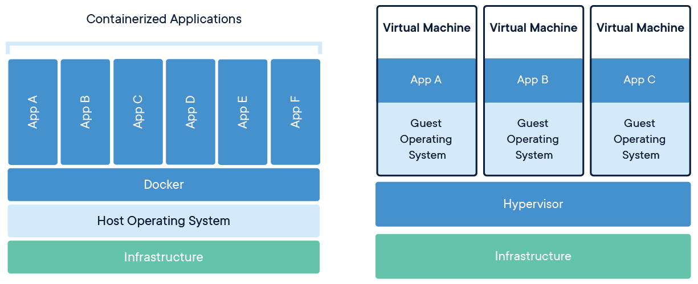
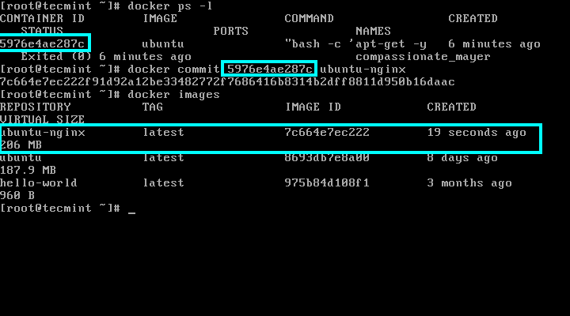
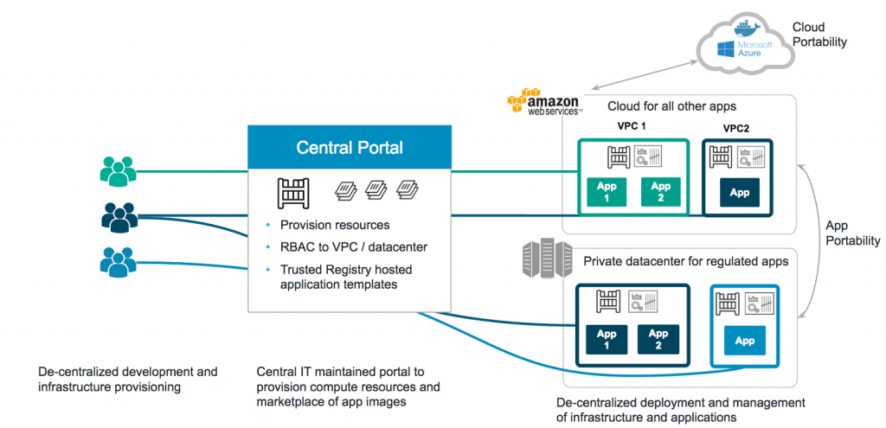
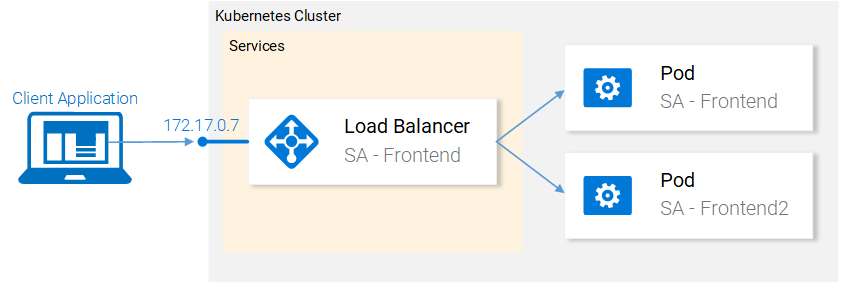

Why Should Companies Care?: 4 Ways App Containerization Revolutionizes DevOps Culture

Imagine yourself in the following scenario: You, an emerging DevOps operator, are tasked with the overwhelming responsibility of managing an automated app deployment workflow, stacked with hundreds of dependencies flooding in ‘hot on the skillet’ by the second. You and every DevOps team player understand that seamless version upgrades, rollouts into production, and scalable deployment executions are critical for the satisfaction of your clientele base (e.g. users) and program stability.
For many DevOps operators, IT managers, and even business executives, this would’ve been a mind-numbing Armageddon scenario on the brink of imploding their company’s app logistics workflow. However, 3rd party OS-level virtualization platforms, like Docker and Kubernetes, have engineered one be-all-end-all technique for DevOps cultures— and that is containers.
Although OS and dependency-leveled containers have been around since the dinosaur ages of the Linux world, it was not until late 2013 when Docker opened up the heaven gates of portable deployment-level containerization. Nevertheless, emerging inter collaborative DevOps operators and IT professionals are asking, “How does this transform the status quo of app virtualization?’ or ‘Where is the company value in any of this?’”
Well, rest assured, we’ll get down to the nitty-gritty advantages of integrating containerized app architectures into your DevOps workflow. These long-term advantages include: 1.) A Consistent Environment: Dependencies and Isolation, 2.) Running Containers Anywhere ‘on the fly’, 3.) Automated Deployment: Rollouts and Rollbacks, and 4.) Docker’s High Return on Investment and Final Cost Savings.
1. A Consistent and Scalable Environment: Dependencies and Isolation
One of the key characteristics of a container configuration is the long-term consistency of its environmental parameters, dependencies, and portability levels. In other words, containers empower emerging developers and DevOps teams with the ability to create a predictable environment, with one cherry on top: complete isolation from other applications.
According to Google Cloud’s brief summary of “Containers at Google”, containers effectively package concise software dependencies needed by domain-specific application deployments. For a DevOps operator, this means that each software-specific container can handle particular versions of programming language runtimes and discrete software libraries.

Well, what does this mean for the developer?: Containerized environments guarantee consistency across all platforms, meaning that developers can flawlessly execute apps across all Operating Systems (e.g. Windows, Linux, and macOS).

So, how does this perfect elixir of consistency across environments and OS-level compatibility translate to a more viable DevOps workflow for emerging businesses?: Companies will experience massive gains in productivity for developers, and IT Ops teams are left with less busywork debugging and diagnosing differences in environments.
2. Running Containers Anywhere ‘On the Fly’
As Google Cloud Platform services, such as Kubernetes, and 3rd party services (e.g. Docker images) storm the scene, developers and businesses can begin valuing the ability to run containers anywhere at any given time.
This emerging ability to run containers virtually anywhere greatly eases simultaneous development and deployment processes on Linux, Windows, and Mac operating systems. By using the Docker Image format, developers can jumpstart their app deployment workflow on the right foot by ensuring optimal portability.
3. Automated Deployment: Rollouts and Rollbacks
Leading production-grade container orchestration tools like Kubernetes enable DevOps teams to experience the best of both worlds in terms of deployment portability and automated testing. Kubernetes eases the burden of deploying and managing applications by automating rollouts and rollbacks, as well as monitoring the health of your services to prevent the possibility of bad rollouts.

Although Kubernetes is an improvised spin on the concept of containers, it enhances already-existing Docker platforms and images by automatically scaling your services up or down based on utilization and permitting you to manage clusters declaratively.
Before getting your hands dirty in building a P2P platform from the ground up, understanding the nuances of business registration is crucial. As registration largely determines tax reporting, your company’s liability during a bankruptcy, etc, it is essential that a business registration form is decided during the early onset of your P2P platform development journey. The below factors should be considered during this process:
4. Docker’s High ROI and Cost Savings
Finally, let’s get clear and practical: Software containerization platforms (e.g. Docker) are often paired with a high Return on Investment (ROI) and cost savings estimations. In terms of spreadsheeting budgets for your DevOps teams, open source programmatic platforms like Docker shave costs by reducing infrastructure resources.
The typically dubbed ‘Dockerized’ containers self-monitor fluctuations in performance usage, ensuring that you garner the highest performance with the least estimative costs. In other words, Docker’s interface platform minimizes by shutting down redundant operations, prioritizing dollars on your most critical operations.
What this means for IT Ops Professionals
The surge of containerized architectures and deployment options in the last decade offers several advantages in the IT Ops sphere: less busywork debugging and reconfiguring environments and easy A/B testing & rollout capabilities. IT Ops teams can cater to the missions of their business or startup by using 3rd party container-orchestration tools to their advantage: IT professionals can declaratively control clusters in workspaces such as Kubernetes to take direct control over cost and computational utilization of their environment. More importantly, IT professionals will not be held accountable for dysfunctional or error-prone app deployments. Containers and orchestration tools continuously monitor app health, leaving a larger window of time for IT Operators to work on what matters most.

About the Author
Daniel Fleury is a technical content writer that ideates, produces, and tailors actionable content for consumers and businesses.